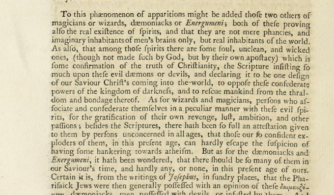

“Some hankering towards atheism” (Book I, ch. V)
English: London 1743, vol. II, p. 702, scan. Long s modernised. Highlighted: Lecky’s quotation.

To this phænomenon of apparitions might be added those two others of magicians or wizards, dæmoniacks or Energumeni; both of these proving also the real existence of spirits, and that they are not mere phancies, and imaginary inhabitants of men’s brains only, but real inhabitants of the world. As also, that among those spirits there are some foul, unclean, and wicked ones, (though not made such by God, but by their own apostacy) which is some confirmation of the truth of Christianity, the Scripture insisting so much upon these evil dæmons or devils, and declaring it to be one design of our Saviour Christ’s coming into the world, to oppose these confederate powers of the kingdom of darkness, and to rescue mankind from the thraldom and bondage thereof. As for wizards and magicians, persons who associate and confederate themselves in a peculiar manner with these evil spirits, for the gratification of their own revenge, lust, ambition, and other passions; besides the Scriptures, there hath been so full an attestation given to them by persons unconcerned in all ages, that those our so confident exploders of them, in this present age, can hardly escape the suspicion of having some hankering towards atheism. But as for the dæmoniacks and Energumeni, it hath been wondered, that there should be so many of them in our Saviour’s time, and hardly any, or none, in this present age of ours.
Backlinks
Every place in Rationalism in Europe that links to this page (generated automatically when the site is built).
- Chapter I: note 127